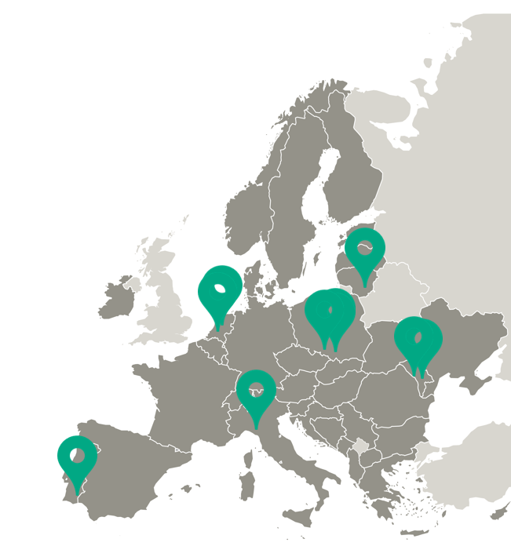

Study Visit · Baixo Alentejo, Portugalia 2026

9 partnerów z 6 krajów - wspólnie budujemy przyszłość innowacji w Europie
Dołącz do grona instytucji i ekspertów, którzy współkształtują rekomendacje do Europejskich Funduszy dla województwa Śląskiego 2021–2027. Bezpłatnie.
Chcę dołączyć do RSGbezpłatne uczestnictwo · 1–2 spotkania rocznie · bez zobowiązań
Regiony europejskie wydają miliardy na laboratoria, parki technologiczne i centra innowacji. Tymczasem Cedefop dokumentuje: prawie połowa pracowników ma kompetencje, których ich miejsca pracy po prostu nie wykorzystują. Jednocześnie co trzeci pracodawca nie może znaleźć właściwych ludzi.
Problem nie leży w braku wiedzy ani infrastruktury. Leży w kompetencjach społecznych i interpersonalnych - umiejętności współpracy, budowania relacji i przekładania badań na realne działania.
Dokładnie to diagnozuje i stara się zmienić projekt SOCORE w sześciu krajach europejskich.
RSG to nie kolejny komitet doradczy. To mechanizm wpływu - Twoje instytucjonalne zdanie trafia do rekomendacji projektowych, które idą do instrumentów polityki finansowanych z Europejskich Funduszy dla Śląska 2021–2027.
Wspólnie identyfikujemy mocne strony i luki kompetencyjne w ekosystemie badań i innowacji województwa Śląskiego. Twoja perspektywa praktyczna jest kluczowa.
Porównujemy praktyki województwa Śląskiego z doświadczeniami z Holandii, Portugalii, Włoch, Mołdawii i Litwy. Dobre praktyki które można przenieść - identyfikujemy razem.
Wypracowane wnioski trafiają do instrumentów wsparcia B+R+I w ramach Europejskich Funduszy dla województwa Śląskiego. Twój głos kształtuje te rekomendacje.
Wyniki badań z Holandii, Portugalii, Włoch, Mołdawii i Litwy - gotowe do cytowania w dokumentach strategicznych, planach i raportach.
Bezpośredni udział w wypracowaniu rekomendacji do instrumentów wsparcia B+R+I w ramach EFS 2021–2027 i RIS Województwa Śląskiego 2030.
Bezpośrednie relacje z instytucjami zarządzającymi funduszami B+R+I w 5 krajach UE. Nie wymiana wizytówek - wspólna praca.
Cytowanie w raportach Interreg Europe, udział w spotkaniach z partnerami z 6 krajów, widoczność w komunikacji programowej.
Pełne możliwości uczestnictwa omawiamy na pierwszym spotkaniu RSG. Zapisz się - i przekonaj się osobiście.
Zaprojektowaliśmy uczestnictwo w RSG tak, żeby było realne - nie tylko na papierze.
SOCORE to projekt Interreg Europe (2025–2029) realizowany przez 9 partnerów z 6 krajów Europy. Jego serce jest proste: regiony, które chcą lepiej wdrażać innowacje, muszą inwestować nie tylko w technologię - ale w ludzi, którzy potrafią ze sobą współpracować, budować zaufanie i przekładać wiedzę na realne działania.
Koordynuje Maria Garus, Uniwersytet Śląski w Katowicach. Projekt jest współfinansowany przez Interreg Europe ze środków Europejskiego Funduszu Rozwoju Regionalnego.

Uniwersytet Śląski w Katowicach to jedna z kluczowych uczelni w południowej Polsce, działająca od 1968 roku i od lat budująca silną pozycję w kraju. Główny kampus mieści się w Katowicach, a uczelnia jest obecna także w Sosnowcu, Chorzowie i Cieszynie. UŚ oferuje szeroką gamę kierunków - od humanistyki i nauk społecznych po kierunki ścisłe, prawnicze, artystyczne i techniczne - na poziomie studiów licencjackich, magisterskich i doktoranckich. W ramach ośmiu wydziałów oraz szkół doktorskich rozwijane są także projekty interdyscyplinarne i międzynarodowe, m.in. w obszarze badań środowiskowych i polarnych. Społeczność ponad 20 000 studentów i 2000 pracowników tworzy dynamiczne środowisko, które łączy solidne podstawy teoretyczne z naciskiem na praktyczne kompetencje i współpracę z otoczeniem.
W województwie Śląskim stawiamy na ludzi – to ich kompetencje, kreatywność i doświadczenie napędzają transformację i innowacje. Urząd Marszałkowski Województwa Śląskiego (Departament Rozwoju Regionalnego i Transformacji) od lat wzmacnia współpracę między biznesem, nauką i administracją. Bazując na ponad 15-letnim doświadczeniu w projektach unijnych, koncentruje się na rozwoju inteligentnych specjalizacji, transformacji cyfrowej oraz sprawiedliwej transformacji regionu. W projekcie SOCORE skupiamy się na tym, jak lepiej wykorzystać potencjał kapitału ludzkiego – rozwijając kompetencje społeczne, kreatywne i przedsiębiorcze, które łączą innowacje z realnymi potrzebami regionu. Województwo Śląskie to region w zmianie – łączący przemysłowe dziedzictwo z nową energią i innowacyjnym podejściem.
To regionalny samorząd w Holandii, który - mimo niewielkiego obszaru - należy do najbardziej konkurencyjnych regionów Europy. W ramach swojej polityki gospodarczej stawia na rozwój przyszłościowej, inkluzywnej gospodarki. Wspólnie z partnerami Prowincja Utrecht koncentruje się na kluczowych obszarach: zdrowiu, zrównoważonym środowisku życia oraz odpowiedzialnej cyfryzacji. Równolegle rozwija podejście do rynku pracy przyszłości i efektywnego wykorzystania ograniczonej przestrzeni. Działania realizowane są we współpracy z szerokim ekosystemem - biznesem, edukacją, administracją publiczną oraz organizacjami regionalnymi i międzynarodowymi, w tym m.in. ROM Utrecht Region, Economic Board Utrecht i Utrecht Talent Alliance.
Jedna z największych uczelni nauk stosowanych w Holandii, wspierająca zarówno studentów, jak i profesjonalistów - na kierunkach w Utrechcie i Amersfoort studiuje ok. 37 000 osób. HU działa jako organizacja ucząca się, stawiając na ciągły rozwój, praktyczne podejście do edukacji i ścisłą współpracę z otoczeniem. Uczelnia opiera swoje działania na trzech filarach: orientacji na przyszłość, współpracy oraz budowaniu otwartej, sprawiedliwej i zrównoważonej społeczności. Edukacja i badania mają charakter praktyczny i odpowiadają na realne wyzwania społeczne, definiowane wspólnie z partnerami regionalnymi, krajowymi i międzynarodowymi. HU koncentruje się na kluczowych obszarach, takich jak zrównoważony rozwój, zdrowie i dobrostan, edukacja oraz innowacje społeczne, dzięki czemu aktywnie wspiera rozwój regionu i poprawę jakości życia jego mieszkańców.
To organizacja reprezentująca wszystkie 234 gminy regionu Liguria we Włoszech, Metropolitalne Miasto Genua oraz prowincje regionu. Działając od 1978 roku jako część ANCI (Associazione Nazionale Comuni Italiani), współpracuje ściśle z instytucjami regionalnymi i krajowymi, wspierając rozwój lokalnych samorządów. Misją ANCI Liguria jest reprezentowanie interesów władz lokalnych oraz zapewnianie im wsparcia eksperckiego i strategicznego m.in. w obszarze funduszy UE, planowania przestrzennego, usług publicznych, innowacji i transformacji cyfrowej , a także transformacji energetycznej, łączności i zrównoważonego rozwoju. Organizacja angażuje się również w działania z zakresu ochrony zdrowia i polityki społecznej poprzez Federsanità ANCI Liguria. Liguria aktywnie uczestniczy w programach współpracy europejskiej, a także koordynuje działania rozwojowe na obszarach wiejskich regionu, koncentrując się na turystyce, integracji społecznej i cyfryzacji. Poprzez swoje inicjatywy organizacja wzmacnia lokalne społeczności, wspiera innowacje, zaangażowanie młodych ludzi oraz współpracę międzynarodową.
To publiczne stowarzyszenie międzygminne działające w regionie Baixo Alentejo w Portugalii, które łączy 13 gmin - m.in. Beja, Mértola, Serpa i Moura - wokół wspólnych celów rozwojowych. Organizacja pełni rolę platformy koordynującej działania strategiczne i inwestycyjne na poziomie ponadlokalnym, z siedzibą w Beja. CIMBAL odpowiada za planowanie i wdrażanie zintegrowanej strategii rozwoju gospodarczego, społecznego i środowiskowego regionu, dbając o mierzalne efekty i spójność działań. Kluczowym elementem jej działalności jest także koordynacja inwestycji międzygminnych oraz efektywne wykorzystanie środków krajowych i europejskich, w tym funduszy w ramach wieloletnich ram finansowych. Dzięki współpracy z administracją centralną i samorządami lokalnymi CIMBAL usprawnia działania instytucji publicznych, ogranicza duplikację inicjatyw i wzmacnia spójność terytorialną. W praktyce oznacza to bardziej skoordynowany rozwój regionu Baixo Alentejo oraz lepsze wykorzystanie jego potencjału społecznego i gospodarczego.
To organizacja non-profit z niemal 30-letnim doświadczeniem we wspieraniu innowacji, współpracująca z biznesem, nauką i instytucjami otoczenia gospodarczego na rzecz rozwoju i komercjalizacji nowych technologii. LIC oferuje także eksperckie wsparcie dla sektora publicznego w zakresie projektowania i wdrażania polityk innowacyjnych. Każdego roku realizuje ok. 5 000 usług dla ponad 1 000 klientów, a jego doświadczenie obejmuje udział w ponad 150 projektach międzynarodowych, w tym finansowanych ze środków UE. Jako multidyscyplinarne centrum wiedzy, LIC opiera się na zespole ponad 30 specjalistów z zakresu zarządzania innowacjami, transferu technologii i polityk publicznych. Dzięki połączeniu analiz, praktyki i międzynarodowych doświadczeń organizacja pełni rolę zaufanego partnera doradczego, wspierającego rozwój innowacyjnych ekosystemów.
To kluczowa instytucja publiczna w Mołdawii, odpowiedzialna za rozwój badań, innowacji i postępu technologicznego. Od 2018 roku agencja wspiera realizację krajowych strategii, wzmacniając doskonałość naukową oraz współpracę międzynarodową. NARD finansuje projekty badawcze, innowacyjne i związane z transferem technologii, zarządzając konkursami krajowymi oraz wspierając partnerstwa między uczelniami, instytutami badawczymi i biznesem. Tylko w 2024 roku agencja wsparła ponad 100 projektów odpowiadających na kluczowe wyzwania krajowe i globalne.
To centralny organ administracji publicznej odpowiedzialny za kształtowanie i realizację polityki państwa w obszarze badań naukowych i innowacji. Ministerstwo opracowuje i wdraża krajowe strategie oraz programy rozwoju nauki i innowacji, działając w ścisłej współpracy z interesariuszami. Odpowiada za tworzenie ram prawnych i instrumentów wspierających sektor, zatwierdzanie budżetów oraz monitorowanie realizacji polityk i projektów - zarówno na poziomie krajowym, jak i międzynarodowym. Instytucja koordynuje działalność podległych organizacji badawczych, wspiera współpracę międzynarodową oraz pozyskiwanie środków zewnętrznych. Odgrywa również ważną rolę w kształtowaniu systemu nauki - m.in. poprzez ustalanie standardów, kierunków rozwoju oraz zasad uznawania kwalifikacji naukowych. Dzięki tym działaniom ministerstwo wzmacnia system badań i innowacji w Mołdawii, wspierając jego rozwój i integrację z międzynarodowym środowiskiem naukowym.
Trzy pola - 30 sekund.
Kolejne spotkanie: 29 kwiecień 2026, on-line
Dostaniesz e-mail w ciągu kilku minut
Odezwiemy się w 48h
Zaproszenie na spotkanie online
Dziękujemy za zainteresowanie. Skontaktujemy się z Tobą w ciągu 3 dni roboczych na podany adres e-mail.
W razie pytań: socore@us.edu.pl